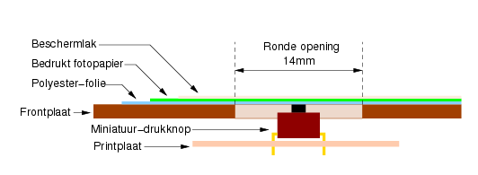

Even voorstellen: een pulsgenerator, Gullinbursti1 genaamd ― omdat een serie naaldpulsen op de scoop enige gelijkenis vertonen met de borstelharen van een everzwijn:
De originele versie was voorzien van een 74LS624, die als
spanningsgestuurde klokgenerator (VCO) fungeerde. Dat
werkte redelijk goed, maar het instellen van de gewenste
frequentie was nogal omslachtig en tijdrovend.
Grotendikken, de microcontroller die verantwoordelijk was voor
de besturing, moest telkens een gelijkspanning genereren met
behulp van een PWM-uitgang en een laagdoorlaatfilter. Met deze
gelijkspanning werd de frequentie van de 74LS624 ingesteld.
Nadeel hierbij was, dat het lineair verband tussen beiden te
wensen overliet, zodat Grotendikken telkens de frequentie moest
meten, zijn PWM aanpassen, opnieuw meten, enz. tot het beoogde
resultaat bekomen werd.
Hierom, en ook omdat het gedrag van de 74LS624 nogal temperatuur-afhankelijk was, werd besloten over te stappen op een DDS.
Om de opzet te verduidelijken, een vereenvoudigd blokschema. De belangrijkste onderdelen hebben een naam gekregen, naar aloude Amiga-gewoonte.
Turbokeu, de DDS, een AD9835, produceert een sinus
met een nauwkeurig-instelbare frequentie. Die sinus gaat via een
laagdoorlaatfilter naar een versterkertrapje. Vandaar gaat het
naar een 74HC74. Deze fungeert als tweedeler, en levert een
uitgangsfrequentie met een puls/pauze-verhouding
van precies 50%.
Dat laatste is nodig, omdat we hiermee Madwizard van een
externe klok voorzien.
Een van Madwizard's PWM-uitgangen levert een symmetrische
blokspanning, van een tweede PWM-uitgang is de duty-cycle
instelbaar. De frequentie van beide uitgangen is gelijk, en kan
varieren van 2MHz tot 0.001Hz. Naar buiten toe zijn beide
uitgangen beschikbaar als TTL-signaal (5V) en tevens als een
variabele spanning, instelbaar met (oh, schande!) een
potmeter.
De bovengrens wordt bepaald door de DDS en zijn
ingangsfrequentie. Die laatste bedraagt 50MHz, waardoor de DDS
nog een bruikbare uitgangsfrequentie van 20MHz kan produceren.
Doordat deze uitgangsfrequentie door de 74HC74 wordt gehalveerd,
komen we op 10MHz terecht.
Dat betekent nog niet, dat Madwizard een frequentie van 10MHz op
zijn PWM-uitgangen kan zetten! Om te beginnen kan die nooit
hoger zijn dan de helft van zijn systeem-klok; 5MHz, dus. Maar
bij die PWM-frequentie is er van “echte” PWM uiteraard geen
sprake; de puls/pauze-verhouding kan enkel 50/50 zijn.
Om die reden maken we een boogje rond Madwizard bij frequenties
van 2MHz of meer.
Grotendikken regelt het verkeer op de print. Hij communiceert via een RS232-lijn met de PC, leest het toetsenbord uit, stelt de DDS in, geeft instellingen door aan Madwizard, vertelt Doolittle ―een GAL16V8― welk van zijn ingangen die naar de uitgangen moet doorspelen, en toont daarnaast verschillende gegevens op een LCD.
Omdat Madwizard's klok varieert, is er gekozen voor een ietwat afwijkende vorm van communicatie: Madwizard gedraagt zich ―wat dat betreft― als een schuifregister (de 74HC595 bijvoorbeeld): databit klaarzetten, INT0 activeren, volgend databit klaarzetten, enz... Als alle bits ingeklokt zijn, wordt INT1 even laag gemaakt, zodat Madwizard weet dat alle bits ingelezen zijn.
Waarom 2 AVR's en een DDS, hoor ik U vragen.
Wel, de ATtiny2313 beschikt over verschillende PWM-kanalen,
waarvan zowel de frequentie als de puls/pauze-verhouding
instelbaar is. Dat zou al volstaan, om een instelbare
uitgangsfrequentie met een variabele pulsbreedte te bekomen.
Maar, de mate waarin deze frequentie kan gewijzigd worden is
nogal beperkt - ze wordt bepaald door de systeem-klok van de AVR
te delen door een geheel getal: 2, 3, 4, 5, enz...
Daaruit volgt, dat met een systeem-klok van 20MHz wel een
PWM-frequentie van 1MHz of 500kHz kan bekomen worden, maar een
frequentie als bv. 123456.7Hz is uitgesloten.
Als we nu de de systeem-klok van Madwizard regelbaar maken, en
we laten die zakken tot 6172835Hz, dan kan deze AVR die
eenvoudig door 50 delen om de gewenste 123456.7Hz te bekomen.
Het produceren van die systeemklok is de taak van Turbokeu (de
DDS). Diens uitgangsfrequentie kunnen we ―in heel kleine
stapjes― variëren tussen 10MHz en 20MHz, zodat Madwizard
―na deling door twee― aangedreven kan worden met een
systeem-klok tussen 5MHz en 10MHz.
Tijdens het wisselen van de DDS-klok zal Grotendikken de reset-pin van Madwizard even laag maken, zodat die niet in de war geraakt. Daarnaast krijgt ook Doolittle het bevel zich even stil te houden. Zo wordt vermeden dat er willekeurige pulsen op de uitgang komen te staan.
Naast de frequentie van zijn PWM-kanalen kan de Madwizard ook de puls-pauze-verhouding wijzigen. Hier doet zich dezelfde beperking voor als bij het instellen van de frequentie: bij hoge frequenties is het instelbereik beperkt. Immers, als de CLK door 4 gedeeld wordt zijn er slechts 3 mogelijkheden: 1/3, 2/2 en 3/1.
De uitgangsfrequentie van Turbokeu kan ingesteld worden met een
32-bits getal. Bij het berekenen daarvan gaan we uit van een
default-systeemfrequentie van 8333kHz. Dit is de
uitgangsfrequentie van de 74HC74; de uitgangsfrequentie van
Turbokeu is dus het dubbele, zijnde 16666kHz. Dat komt neer op
50MHz/3. Die delen we door de gewenste uitgangs-frequentie. Het
resultaat van die deling komt in het ICR1-register van
Madwizard te staan. Dit fungeert als topwaarde voor de 16-bits
counter - het getal, waardoor Madwizard zijn systeem-klok
deelt.
De volgende stap bestaat er in, de ICR1-waarde ―een integer,
dus― terug te vermenigvuldigen met de gewenste
uitgangsfrequentie. Dat levert de helft van de gewenste
DDS-frequentie op. Het getal dat we naar de DDS moeten
schrijven, valt zó te berekenen:
DDS-WORD = DDS-frequentie * (((2^32 / 50000000) / 100) * 22)
In de praktijk vermenigvuldigen we de
gewenste DDS-frequentie met 171.79869184, tellen daar
0.53
bij, en zetten we het om naar een 32-bits integer.
Alle berekeningen worden door Grotendikken als floating-point uitgevoerd. Met tussendoor omzettingen naar een integer, waar dat nodig is. Als we die 123456.5Hz uit het voorbeeld hierboven willen bekomen, ziet de bewerking er zo uit:
6250000.00 / 123456.7 = 50.62503695627697808
ICR1 = 50
50 * 123456.7 = 6172835
6172835 * 171.79869184 = 1060484977.9441664
1060484977.9441664 + 0.5 = 1060484978.4441664
DDS-WORD = 1060484978
Nog een woordje over P1: hoewel de ingang van een 74HCxx-IC ongeveer rond de halve voedingsspanning schakelt, is toch een mogelijkheid voorzien om afwijkingen bij te regelen door middel van P1. Hiermee wordt het ook mogelijk, een 74HCT74 als tweedeler te gebruiken.
Er zijn 4 uitgangen beschikbaar:
Een uitgang met variabele amplitude en puls/pauze-verhouding van
50%.
Een TTL- uitgang met een puls/pauze-verhouding van
50%.
Een uitgang met variabele amplitude en instelbare
puls/pauze-verhouding.
Een TTL- uitgang met instelbare puls/pauze-verhouding.
Op de print is geen plaats voorzien voor de voedingstrafo's, gelijkrichters en buffer-elco's. Daarvoor ontbreekt de plaats, maar daarnaast is er zo'n verscheidenheid in de pin-layout van verschillende (merken) printtrafo's, dat het helemaal geen zin heeft er een algemeen-bruikbare print-layout voor te ontwerpen.
Tr1 levert stroom voor de logica en voor de negatieve
hulpspanning van de uitgangstrap. Hier kunnen desgewenst twee
afzonderlijke trafo's ingezet worden.
Tr2 levert stroom voor de variabele spanning van de
uitgangstrap. IC53 moet flink gekoeld worden, maar ook de andere
spanningsregelaars kunnen een beetje koeling gebruiken. Daartoe
kan een aluminium plaatje van 5cm hoog en 1mm dik geplooid
worden, zoals op de print-layout te zien is. De drie regelaars
moeten wel geïsoleerd op dit koelplaatje bevestigd worden.
Zorg er ook voor, dat het koelplaatje geen kortsluiting
veroorzaakt tussen GND en de uitgang van de 7805 (IC51). Die
uitgang loopt immers onder het koelplaatje door.
D55, D56 en D61 zijn toegevoegd om de schade te beperken als de voeding fout op de print wordt aangesloten. Wie gezegend is met een overschot aan zelfvertrouwen kan ze weglaten...
C55, C56 en C58 zijn locale buffer-elco's. Als de afstand tussen trafo/gelijkrichter/buffer-elco en hoofdprint relatief groot is (> 10cm) kunnen ze best een maatje groter genomen worden. De spanningsregelaars zullen dat in dank afnemen.
De broncode voor de firmware is verdeeld over veschillende bestanden.
Voor Madwizard is een hex-bestand beschikbaar.
Main.h
Main.c
DDS.c
LCD.c
SHIFT.c
Routines.c
UART.c
Version.c
Ook voor Grotendikken is een hex-bestand beschikbaar.
Waartoe de cijfertoetsen dienen, zal wel duidelijk zijn. Daarmee
kan de gebruiker een bepaalde waarde intikken. Dat kan de
frequentie zijn, maar ook de pulsbreedte (in percent) of een
waarde voor een andere functie.
Ook de ↵ toets behoeft geen uitleg.
Met de mode-toets worden verschillende modes doorlopen:
Hiermee kan de uitgangsfrequentie ingesteld worden tot op
0.001Hz nauwkeurig voor de lagere frequenties.
Bij hogere frequenties wordt de resolutie kleiner, maar ze
blijft groter dan 1Hz over het ganse bereik.
Bij erg lage frequenties kan zich een raar verschijnsel
voordoen: bij het opgeven van bv. 0.005Hz lijkt het alsof
Gullinbursti niet reageert. Geen paniek, daar is een reden voor:
de DDS-frequentie is dan gedaald tot een 300kHz, en de
communicatie met Madwizard moet gelijke tred houden met diens
systeem-frequentie.
Naast de cijfertoetsen is er ook een UP- en een DOWN-toets
voorzien. Daarmee wordt de DDS-frequentie telkens met
1Hz verhoogd of verlaagt. Of ―beter gezegd― de
uitgangsfrequentie van tweedeler IC2, hetgeen betekent
dat de DDS stapjes van 2Hz moet nemen.
Grotendikken berekent bij elke UP- of DOWN-actie opnieuw de
uitgangsfrequentie, en toont deze op het scherm. Dat betekent
geenszins, dat de gebruiker daar iets van merkt! Bij lagere
uitgangsfrequenties is de verandering immers kleiner dan
0.001Hz. Het komt er dan op aan, de UP- of DOWN-toets ingedrukt
te houden. Het aanpassen van de frequentie gaat dan sneller en
sneller.
De pulsbreedte wordt voorgesteld als de verhouding tussen een
puls en een pause; in percent, dus. Dat kan 1% zijn,
maar ook 0.01% of 99.9%.
De hoogst-haalbare resolutie hangt af van de uitgangsfrequentie.
Bij frequenties, lager dan 80kHz, bedraagt de resolutie 1/100 of
meer. Bij hogere frequenties daalt de resolutie - bij
frequenties boven 2MHz valt de pulsbreedte niet meer in te
stellen.
Uiteraard kan men bij hogere frequenties nog steeds 0.01% opgeven; Gullinbursti doet zijn best om dat zoveel mogelijk te benaderen.
Zolang we de mode-toets kortstondig indrukken, wisselt de mode
tussen “Frequentie” en “Pulsbreedte”. Dat zijn immers de
meest-gebruikte modes.
Pas als we in Pulsbreedte-mode zijn, én we houden de
mode-toets langer dan 1.5 seconden ingedrukt, komen we in de
sweep-mode terecht.
Deze mode laat toe, Gullinbursti doorheen een bepaald
frequentiegebied te laten sweepen.
Het werkt, maar verkeert nog in een experimenteel stadium.
Het is mogelijk, met Gullinbursti te communiceren over een
RS232-lijn aan 38400bd (8N1). Dat levert meer mogelijkheden op
dan het toetsenbord.
Naast de gebruikelijke zaken (frequentie, puls/pauze-verhouding,
enz.) kunnen ook verschillende registers rechtstreeks ingesteld
worden:
Het DDS-woord
ICR1 van Madwizard (Madwizard_maxcount)
OCR1B van Madwizard (Madwizard_ocr1b)
De prescaler van Madwizard (Madwizard_prescaler)
Daarnaast kan men ook de DDS-frequentie rechtstreeks opgeven. Hierbij, en bij het instellen van het DDS-woord, is het oppassen geblazen! Wijzigt met de bestaande instellingen te sterk, dan bestaat de mogelijkheid dat Madwizard zich verslikt. Het is immers diens systeemklok die dan grote sprongen maakt!
Wie alle commando's wil kennen, drukt op [ENTER]. Gullinbursti
zal ze dan tonen.
De regel is, dat een letter, gevolgd door een gelijk-teken
(“f=” bv.) een vraag naar de huidige instelling is, terwijl
men deze instelling wijzigd door er een getal bij te voegen, bv.
“f=1234.56”.
Het moeilijkste soldeerwerk wordt gevormd door de DDS zelf.
Daarbij kan deze vergroting wellicht hulp bieden.
Een loep kan ook handig zijn voor zo'n klein ding!
Rondom de DDS zijn enkele soldeereilandjes te zien, waarvan het
doel niet meteen duidelijk is. Daar ligt de volgende
gedachtengang achter:
Als een IC stuk gaat, haal je die gewoon uit zijn voetje, en je
vervangt hem. Als echter de DDS stuk gaat, zit je met een
probleem. Wie over een SMD-reworkstation beschikt, zal met het
verwijderen wellicht niet al te veel moeite hebben. Maar wie
enkel over een soldeerbout en een tinzuiger beschikt, loopt kans
dat er bij het verwijderen van de DDS enkele van die miniscule
printspoortjes sneuvelen.
Dat is vervelend, maar een ramp is het niet. Er kan immers een
nieuw printje gemaakt worden, dat er uitziet als de vergroting
hierboven. En nu wordt het doel van die eilandjes meteen
duidelijk: ze laten toe, dat het nieuwe printje op eenvoudige
wijze met de hoofdprint verbonden kan worden.
Deze aanpak maakt het ook mogelijk, een opsteekprintje te maken voor een ander type DDS. De signaal- en de voedings-eilandjes (Vcc, GND, GND, IN, UIT, FSYNC, SDATA en SCLK) zijn aangeduid op het silk-screen.
Het silk-screen.
Hier hoort een woordje uitleg bij: C8 en C9 worden onder het IC-voetje van IC6 geplaatst om ruimte te besparen. Men kan uiteraard ook twee SMD-condensatortjes aan de soldeerzijde plaatsen.
Nabij de aansluiting voor de LCD-module is “Rx” terug te
vinden. Deze weerstand is enkel nodig, als de LCD-module niet
over een serieweerstand voor de achtergrond-verlichting
beschikt.
Als dat wel zo is, kan hier een draadbrug geplaatst worden.
Verder is er bij elk IC plaats voorzien voor een ontkoppelcondensator van 100n (3 stuks bij IC6). Die staan niet allenaal op het schema vermeld.
Het toetsenbord bestaat uit 16 toetsen, opgesteld in een matrix van 4 rijen (uitgangen) x 4 kolommen (ingangen). Het afscannen van het toetsenbord gebeurt op traditionele wijze: Grotendikken maakt één voor één de lijnen laag, en gaat vervolgens na of één van de kolom-ingangen daarop reageert. Is dat zo, dan bepaalt de combinatie van rij-nummer en kolom-nummer welke toets is ingedrukt.
De layout hierboven is ontworpen voor miniatuur-druktoetsen. Merk op, dat er bij de twee middenste kolommen nog draadbruggen gelegd moeten worden, aangegeven met een blauwe lijn.
Zowel trough-hole als SMD-varianten kunnen gebruikt worden.
Ook een pdf-versie van de layout mag niet ontbreken.
De opbouw.

Meer details over de opbouw zijn te vinden bij het Pulsteller-project.